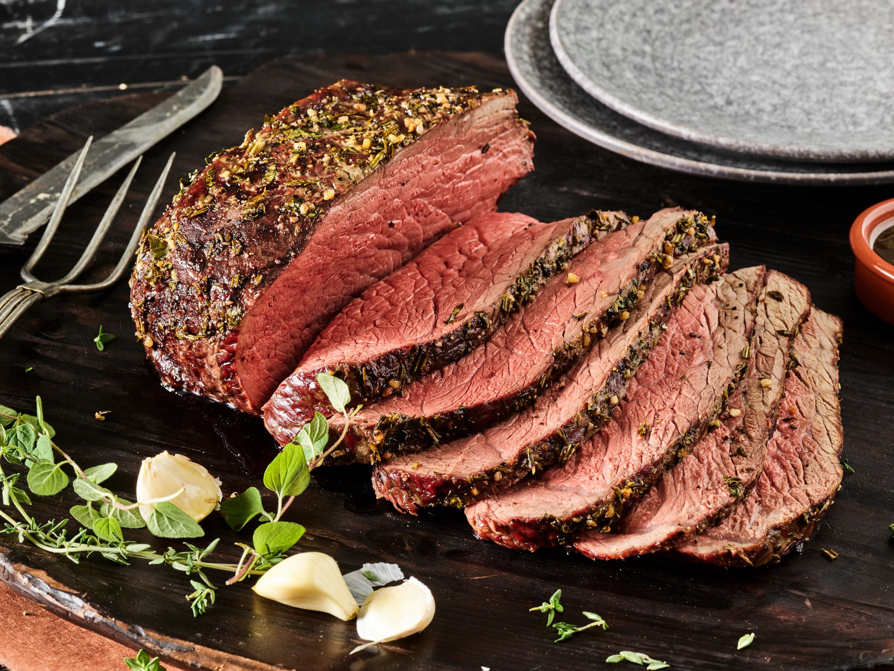

Roasted Beef Recipe
Home

Description
This roasted beef is the ultimate comfort food—juicy, perfectly pink in the center, and wrapped in a golden herb crust. We start with a well-marbled cut, rub it down with garlic, thyme, and olive oil, then roast it low and slow until it melts in your mouth. Pair it with roasted carrots and a splash of gravy for a cozy, satisfying meal.
Ingredients
- 1 cup beef broth or red wine (for the pan)
- 2-3 sprigs of fresh rosemary and thyme (for aromatics)
- 1 onion, quartered
- 2 carrots, cut into chunks (optional, for roasting with the beef)
Steps
- Let the beef come to room temperature
- Preheat your oven
- Season the beef
- Make the herb crust
- Prep your roasting pan
- Roast (high heat sear)
- Lower temp and roast to finish
- Rest the roast
- Slice & serve